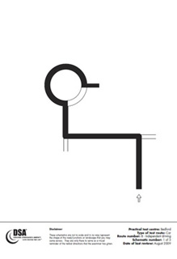

|
Your practical driving test will include approximately ten minutes of independent driving. During your test you'll have to drive independently by either following: * Traffic signs * A series of directions * A combination of both. To help you understand where you are going when following verbal directions, the examiner will show you a diagram (please click on the diagram to the right to find out more). It doesn't matter if you don't remember every direction, or if you go the wrong way - that can happen to the most experienced drivers. Independent driving is not a test of your orientation and navigation skills. Driving independently means making your own decisions - this includes deciding when it's safe and appropriate to ask for confirmation about where you're going. |
 |